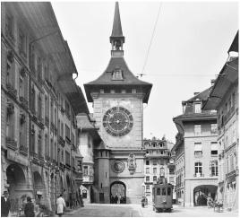
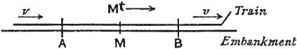

The Bern Clock Tower
The Background
Relativity is a simple concept. It asserts that the fundamental laws of physics are the same whatever your state of motion.
相对论是一个简单的概念。它断言，无论你处于何种运动状态，物理学的基本定律都保持不变。
For the special case of observers moving at a constant velocity, this concept is pretty easy to accept. Imagine a man in an armchair at home and a woman in an airplane gliding very smoothly above. Each can pour a cup of coffee, bounce a ball, shine a flashlight, or heat a muffin in a microwave and have the same laws of physics apply.
就观察者以恒定速度运动的特殊（即狭义）情形而言，这个概念并不难接受。让我们想像一位先生坐在家里的椅子上，一位女士坐飞机在天空中飞行。他们可以倒咖啡，拍皮球，开灯或者在微波炉里加热松饼，支配这些东西的都是同样的物理学定律。
In fact, there is no way to determine which of them is “in motion” and which is “at rest.” The man in the armchair could consider himself at rest and the plane in motion. And the woman in the plane could consider herself at rest and the earth as gliding past. There is no experiment that can prove who is right.
事实上，我们无法确定他们之中谁“在运动”，谁“处于静止”。坐在椅子上的先生可能会认为自己是静止的，飞机在运动；而飞机上的女士却可能认为她是静止的，大地则渐行渐远。没有实验能够验证谁说的是对的。
Indeed, there is no absolute right. All that can be said is that each is moving relative to the other. And of course, both are moving very rapidly relative to other planets, stars, and galaxies.*
的确，绝对的正确性是没有的，我们只能说他们在做相对运动。当然，相对于其他行星、恒星和星系，两个人都在飞速地运动着。
The special theory of relativity that Einstein developed in 1905 applies only to this special case (hence the name): a situation in which the observers are moving at a constant velocity relative to one another—uniformly in a straight line at a steady speed—referred to as an “inertial reference system.”1
爱因斯坦1905年提出的狭义相对论只适用于这一特殊的情形（所以称为“狭义”）：观察者相对彼此以恒定的速度运动（沿直线匀速运动），这被称为“惯性参照系”。
It’s harder to make the more general case that a person who is accelerating or turning or rotating or slamming on the brakes or moving in an arbitrary manner is not in some form of absolute motion, because coffee sloshes and balls roll away in a different manner than for people on a smoothly gliding train, plane, or planet. It would take Einstein a decade more, as we shall see, to come up with what he called a general theory of relativity, which incorporated accelerated motion into a theory of gravity and attempted to apply the concept of relativity to it.2
而对于更一般的情形，比如正在加速、转变、旋转、刹车或随意运动的人，似乎很难说他不是在做着某种形式的绝对运动，因为在他看来，不论是咖啡的泼洒，还是球的滚动，都不同于在平衡行驶的火车、飞机或行星上的人所看到的情况。我们很快就会看到，爱因斯坦将用十年多的时间提出他他的所谓广义（即一般）相对论，这一理论把加速运动纳入了引力理论，并试图将相对性概念应用于它。
The story of relativity best begins in 1632, when Galileo articulated the principle that the laws of motion and mechanics (the laws of electromagnetism had not yet been discovered) were the same in all constant-velocity reference frames. In his Dialogue Concerning the Two Chief World Systems, Galileo wanted to defend Copernicus’s idea that the earth does not rest motionless at the center of the universe with everything else revolving around it. Skeptics contended that if the earth was moving, as Copernicus said, we’d feel it. Galileo refuted this with a brilliantly clear thought experiment about being inside the cabin of a smoothly sailing ship:
相对论的历史要从1632年说起。那一年伽利略提出了相对性原理，认为运动定律和力学定律（电磁学定律尚未发现）在一切匀速参照系中都保持不变。在《关于两大世界体系的对话》中，伽利略为哥白尼的思想辩护，主张地球并非静止于宇宙的中心，同时万物围绕它旋转。对此有疑虑的人认为如果地球果真像哥白尼所说的那样运动，那么我们理应感觉得到。伽利略让他的代言人用一个关于船舱的清晰的思想实验反驳了这种观点：
Shut yourself up with some friend in the main cabin below decks on some large ship, and have with you there some flies, butterflies, and other small flying animals. Have a large bowl of water with some fish in it; hang up a bottle that empties drop by drop into a wide vessel beneath it. With the ship standing still, observe carefully how the little animals fly with equal speed to all sides of the cabin. The fish swim indifferently in all directions; the drops fall into the vessel beneath; and, in throwing something to your friend, you need throw it no more strongly in one direction than another, the distances being equal; jumping with your feet together, you pass equal spaces in every direction. When you have observed all these things carefully, have the ship proceed with any speed you like, so long as the motion is uniform and not fluctuating this way and that. You will discover not the least change in all the effects named, nor could you tell from any of them whether the ship was moving or standing still.3
把你和某个朋友关在一条大船甲板下的主舱里，让他们带着几只苍蝇、蝴蝶和其他小飞虫，舱内放一只大水碗，其中有几条鱼。然后，挂上一个水瓶，让水一滴一滴地滴到下面的一个宽口罐里。船停着不动时，你留神观察，小虫都以相等的速度朝着舱内各个方向飞行，鱼朝各个方向流动自如，水滴滴进下面的罐中，你把任何东西扔给你的朋友时，只要距离相等，朝这一方向不必比另一方向用更多的力。你双脚齐跳，无论朝哪个方向，跳过的距离都相等。当你仔细观察这一切之后，再使船以任何速度前进，只要运动是匀速，也不忽左忽右地摆动，你将发现，所有上述现象都没有丝毫变化。你也无法根据其中任何一个现象来断定，船到底是在运动还是静止不动。
There is no better description of relativity, or at least of how that principle applies to systems that are moving at a constant velocity relative to each other.
这是对相对性的绝佳描述，至少阐明了相对性原理如何运用于彼此以恒定速度做相对运动的系统。
Inside Galileo’s ship, it is easy to have a conversation, because the air that carries the sound waves is moving smoothly along with the people in the chamber. Likewise, if one of Galileo’s passengers dropped a pebble into a bowl of water, the ripples would emanate the same way they would if the bowl were resting on shore; that’s because the water propagating the ripples is moving smoothly along with the bowl and everything else in the chamber.
在伽利略的船上，要想彼此交谈并不困难，因为承载声波的空气正在和船舱中的人一起缓缓移动。类似的，如果有乘客将小石子丢进一碗水中，那么泛起涟漪的方式将与碗在岸上保持静止时相同，因为此时传播涟漪的水正在和包括碗在内的船舱中的所有东西一起缓缓移动。
Sound waves and water waves are easily explained by classical mechanics. They are simply a traveling disturbance in some medium. That is why sound cannot travel through a vacuum. But it can travel through such things as air or water or metal. For example, sound waves move through room temperature air, as a vibrating disturbance that compresses and rarefies the air, at about 770 miles per hour.
在经典力学的框架下，声波和水波很容易解释。它们只不过是在介质是行进的一种扰动。这就是为什么声波不能在真空中传播，却可以在空气、水和金属中传播的原因。例如，通过压缩和稀释空气，声波在室温空气中穿行的速度大约为每小时770英里。
Deep inside Galileo’s ship, sound and water waves behave as they do on land, because the air in the chamber and the water in the bowls are moving at the same velocity as the passengers. But now imagine that you go up on deck and look at the waves out in the ocean, or that you measure the speed of the sound waves from the horn of another boat. The speed at which these waves come toward you depends on your motion relative to the medium (the water or air) propagating them.
在伽利略的船舱里，声音和水的表现与在岸上完全一样，因为船舱中的空气、碗里的水以及乘客都以相同的速度运动。然而，倘若你登上甲板，观察大海中的波浪，或者根据远方水艇的嗽里传出的声音来测量声速，那么水波和声波朝你涌来的速度将取决于你如何相对于传播它们的介质（水或空气）运动。
In other words, the speed at which an ocean wave reaches you will depend on how fast you are moving through the water toward or away from the source of the wave. The speed of a sound wave relative to you will likewise depend on your motion relative to the air that’s propagating the sound wave.
换句话说，波浪朝你涌来的速度将取决于在水中靠近或远离波源的速度。类似地，声波相对于你的速度将取决于你如何相对于传播声波的空气运动。
Those relative speeds add up. Imagine that you are standing in the ocean as the waves come toward you at 10 miles per hour. If you jump on a Jet Ski and head directly into the waves at 40 miles per hour, you will see them moving toward you and zipping past you at a speed (relative to you) of 50 miles per hour. Likewise, imagine that sound waves are coming at you from a distant boat horn, rippling through still air at 770 miles per hour toward the shore. If you jump on your Jet Ski and head toward the horn at 40 miles per hour, the sound waves will be moving toward you and zipping past you at a speed (relative to you) of 810 miles per hour.
这些相对速度要叠加在一起。想像你正站在海面上，波浪以每小时10英里的速度向你涌来，此时你乘上快艇，以每小时40英里的速度驶向海浪，波浪正以每小时50英里的速度朝你（相对于你）涌来。类似地，想象声波从远方的喇叭中以每小时770英里的速度穿过静止的空气向你传来。如果你跳上快艇，以每小时40英里的速度朝着喇叭行时，那么声波将会以每小时810英里的速度向你（相对于你）传来。
All of this led to a question that Einstein had been pondering since age 16, when he imagined riding alongside a light beam: Does light behave the same way?
那么，光的行为也是如此吗？这是爱因斯坦从16岁起就一直冥思苦想的一个问题，他曾想象自己去追赶一束光会怎么样。
Newton had conceived of light as primarily a stream of emitted particles. But by Einstein’s day, most scientists accepted the rival theory, propounded by Newton’s contemporary Christiaan Huygens, that light should be considered a wave.
牛顿认为，光是发射出来的一束微粒。但在爱因斯坦的时代，大多数科学家都接受了与之相对立的波动说，即主张光应当被看做一种波。这种理论是牛顿的同时代的人克里斯蒂安·惠更斯提出来的。
A wide variety of experiments had confirmed the wave theory by the late nineteenth century. For example, Thomas Young did a famous experiment, now replicated by high school students, showing how light passing through two slits produces an interference pattern that resembles that of water waves going through two slits. In each case, the crests and troughs of the waves emanating from each slit reinforce each other in some places and cancel each other out in some places.
到了19世纪末，波动说已经获得了大量实验支持。例如，托马斯·杨曾经做过一个现在高中生耳熟能详的其名实验，表明光就像水波一样，穿过两条窄缝时会产生干涉条纹。因为从每条缝发出的波峰和波谷会在某些地方相互加强，在某些地方相互抵销。
James Clerk Maxwell helped to enshrine this wave theory when he successfully conjectured a connection between light, electricity, and magnetism. He came up with equations that described the behavior of electric and magnetic fields, and when they were combined they predicted electromagnetic waves. Maxwell found that these electromagnetic waves had to travel at a certain speed: approximately 186,000 miles per second.* That was the speed that scientists had already measured for light, and it was obviously not a mere coincidence.4
麦克斯韦成功地发现了光、电、磁之间的关联，这更有助于波动说。他提出了描述电场和磁场的方程。而这些方程联立起来就会预测出电磁波。麦克斯韦发现，这些电磁波只能以某一特定的速度传播：约为每秒种186000英里，而这恰恰是科学家们已经测量到的光速。这显然并非巧合。
It became clear that light was the visible manifestation of a whole spectrum of electromagnetic waves. This includes what we now call AM radio signals (with a wavelength of 300 yards), FM radio signals (3 yards), and microwaves (3 inches). As the wavelengths get shorter (and the frequency of the wave cycles thus increases), they produce the spectrum of visible light, ranging from red (25 millionths of an inch) to violet (14 millionths of an inch). Even shorter wavelengths produce ultraviolet rays, X-rays, and gamma rays. When we speak of “light” and the “speed of light,” we mean all electromagnetic waves, not just the ones that are visible to our eyes.
现在我们知道，光是整个波谱中的可见部分。电磁波谱包括我们现在所说的调幅信号（波长为300码）、调频信号（波长为3码）和微波（波长为3英寸）。随着波长逐渐变短（波的频率也随之增加），它们构成了从红（1英二寸的百万分之二十五）到紫（1英寸的百万分之十四）的可见光谱。更短的波长则对应于此外线、X射线和伽马射线。当我们说到“光”和“光速”时，指的是所有电磁波，而不仅仅是能够被肉眼看到的可见光。
That raised some big questions: What was the medium that was propagating these waves? And their speed of 186,000 miles per second was a speed relative to what?
The answer, it seemed, was that light waves are a disturbance of an unseen medium, which was called the ether, and that their speed is relative to this ether. In other words, the ether was for light waves something akin to what air was for sound waves. “It appeared beyond question that light must be interpreted as a vibratory process in an elastic, inert medium filling up universal space,” Einstein later noted.5
This ether, unfortunately, needed to have many puzzling properties. Because light from distant stars is able to reach the earth, the ether had to pervade the entire known universe. It had to be so gossamer and, shall we say, so ethereal that it had no effect on planets and feathers floating through it. Yet it had to be stiff enough to allow a wave to vibrate through it at an enormous speed.
All of this led to the great ether hunt of the late nineteenth century. If light was indeed a wave rippling through the ether, then you should see the waves going by you at a faster speed if you were moving through the ether toward the light source. Scientists devised all sorts of ingenious devices and experiments to detect such differences.
They used a variety of suppositions of how the ether might behave. They looked for it as if it were motionless and the earth passed freely through it. They looked for it as if the earth dragged parts of it along in a blob, the way it does its own atmosphere. They even considered the unlikely possibility that the earth was the only thing at rest with respect to the ether, and that everything else in the cosmos was spinning around, including the other planets, the sun, the stars, and presumably poor Copernicus in his grave.
One experiment, which Einstein later called “of fundamental importance in the special theory of relativity,”6 was by the French physicist Hippolyte Fizeau, who sought to measure the speed of light in a moving medium. He split a light beam with a half-silvered angled mirror that sent one part of the beam through water in the direction of the water’s flow and the other part against the flow. The two parts of the beam were then reunited. If one route took longer, then the crests and troughs of its waves would be out of sync with the waves of the other beam. The experimenters could tell if this happened by looking at the interference pattern that resulted when the waves were rejoined.
A different and far more famous experiment was done in Cleveland in 1887 by Albert Michelson and Edward Morley. They built a contraption that similarly split a light beam and sent one part back and forth to a mirror at the end of an arm facing in the direction of the earth’s movement and the other part back and forth along an arm at a 90-degree angle to it. Once again, the two parts of the beam were then rejoined and the interference pattern analyzed to see if the path that was going up against the supposed ether wind would take longer.
No matter who looked, or how they looked, or what suppositions they made about the behavior of the ether, no one was able to detect the elusive substance. No matter which way anything was moving, the speed of light was observed to be exactly the same.
So scientists, somewhat awkwardly, turned their attention to coming up with explanations about why the ether existed but was undetectable in any experiment. Most notably, in the early 1890s Hendrik Lorentz—the cosmopolitan and congenial Dutch father figure of theoretical physics—and, independently, the Irish physicist George Fitzgerald came up with the hypothesis that solid objects contracted slightly when they moved through the ether. The Lorentz-Fitzgerald contraction would shorten everything, including the measuring arms used by Michelson and Morley, and it would do so by just the exact amount to make the effect of the ether on light undetectable.
Einstein felt that the situation “was very depressing.” Scientists found themselves unable to explain electromagnetism using the Newtonian “mechanical view of nature,” he said, and this “led to a fundamental dualism which in the long run was insupportable.”7
Einstein’s Road to Relativity
“A new idea comes suddenly and in a rather intuitive way,” Einstein once said. “But,” he hastened to add, “intuition is nothing but the outcome of earlier intellectual experience.”8
Einstein’s discovery of special relativity involved an intuition based on a decade of intellectual as well as personal experiences.9 The most important and obvious, I think, was his deep understanding and knowledge of theoretical physics. He was also helped by his ability to visualize thought experiments, which had been encouraged by his education in Aarau. Also, there was his grounding in philosophy: from Hume and Mach he had developed a skepticism about things that could not be observed. And this skepticism was enhanced by his innate rebellious tendency to question authority.
Also part of the mix—and probably reinforcing his ability to both visualize physical situations and to cut to the heart of concepts—was the technological backdrop of his life: helping his uncle Jakob to refine the moving coils and magnets in a generator; working in a patent office that was being flooded with applications for new methods of coordinating clocks; having a boss who encouraged him to apply his skepticism; living near the clock tower and train station and just above the telegraph office in Bern just as Europe was using electrical signals to synchronize clocks within time zones; and having as a sounding board his engineer friend Michele Besso, who worked with him at the patent office, examining electromechanical devices.10
The ranking of these influences is, of course, a subjective judgment. After all, even Einstein himself could not be sure how the process unfolded. “It is not easy to talk about how I arrived at the theory of relativity,” he said. “There were so many hidden complexities to motivate my thought.”11
One thing we can note with some confidence is Einstein’s main starting point. He repeatedly said that his path toward the theory of relativity began with his thought experiment at age 16 about what it would be like to ride at the speed of light alongside a light beam. This produced a “paradox,” he said, and it troubled him for the next ten years:
If I pursue a beam of light with the velocity c (velocity of light in a vacuum), I should observe such a beam of light as an electromagnetic field at rest though spatially oscillating. There seems to be no such thing, however, neither on the basis of experience nor according to Maxwell’s equations. From the very beginning it appeared to me intuitively clear that, judged from the standpoint of such an observer, everything would have to happen according to the same laws as for an observer who, relative to the earth, was at rest. For how should the first observer know or be able to determine that he is in a state of fast uniform motion? One sees in this paradox the germ of the special relativity theory is already contained.12
This thought experiment did not necessarily undermine the ether theory of light waves. An ether theorist could imagine a frozen light beam. But it violated Einstein’s intuition that the laws of optics should obey the principle of relativity. In other words, Maxwell’s equations, which specify the speed of light, should be the same for all observers in constant-velocity motion. The emphasis that Einstein placed on this memory indicates that the idea of a frozen light beam—or frozen electromagnetic waves—seemed instinctively wrong to him.13
In addition, the thought experiment suggests that he sensed a conflict between Newton’s laws of mechanics and the constancy of the speed of light in Maxwell’s equations. All of this instilled in him “a state of psychic tension” that he found deeply unnerving. “At the very beginning, when the special theory of relativity began to germinate in me, I was visited by all sorts of nervous conflicts,” he later recalled. “When young, I used to go away for weeks in a state of confusion.”14
There was also a more specific “asymmetry” that began to bother him. When a magnet moves relative to a wire loop, an electric current is produced. As Einstein knew from his experience with his family’s generators, the amount of this electric current is exactly the same whether the magnet is moving while the coil seems to be sitting still, or the coil is moving while the magnet seems to be sitting still. He also had studied an 1894 book by August Föppl, Introduction to Maxwell’s Theory of Electricity. It had a section specifically on “The Electrodynamics of Moving Conductors” that questioned whether, when induction occurs, there should be any distinction between whether the magnet or the conducting coil is said to be in motion.15
“But according to the Maxwell-Lorentz theory,” Einstein recalled, “the theoretical interpretation of the phenomenon is very different for the two cases.” In the first case, Faraday’s law of induction said that the motion of the magnet through the ether created an electric field. In the second case, Lorentz’s force law said a current was created by the motion of the conducting coil through the magnetic field. “The idea that these two cases should essentially be different was unbearable to me,” Einstein said.16
Einstein had been wrestling for years with the concept of the ether, which theoretically determined the definition of “at rest” in these electrical induction theories. As a student at the Zurich Polytechnic in 1899, he had written to Mileva Mari that “the introduction of the term ‘ether’ into theories of electricity has led to the conception of a medium whose motion can be described without, I believe, being able to ascribe physical meaning to it.”17 Yet that very month he was on vacation in Aarau working with a teacher at his old school on ways to detect the ether. “I had a good idea for investigating the way in which a body’s relative motion with respect to the ether affects the velocity of the propagation of light,” he told Mari.
that “the introduction of the term ‘ether’ into theories of electricity has led to the conception of a medium whose motion can be described without, I believe, being able to ascribe physical meaning to it.”17 Yet that very month he was on vacation in Aarau working with a teacher at his old school on ways to detect the ether. “I had a good idea for investigating the way in which a body’s relative motion with respect to the ether affects the velocity of the propagation of light,” he told Mari.
Professor Weber told Einstein that his approach was impractical. Probably at Weber’s suggestion, Einstein then read a paper by Wilhelm Wien that described the null results of thirteen ether-detection experiments, including those by Michelson and Morley and by Fizeau.18 He also learned about the Michelson-Morley experiment by reading, sometime before 1905, Lorentz’s 1895 book, Attempt at a Theory of Electrical and Optical Phenomena in Moving Bodies. In this book, Lorentz goes through various failed attempts to detect the ether as a prelude to developing his theory of contractions.19
“Induction and Deduction in Physics”
So what effect did the Michelson-Morley results—which showed no evidence of the ether and no difference in the observed speed of light no matter in what direction the observer was moving—have on Einstein as he was incubating his ideas on relativity? To hear him tell it, almost none at all. In fact, at times he would even recollect (incorrectly) that he had not even known of the experiment before 1905. Einstein’s inconsistent statements over the next fifty years about the influence of Michelson-Morley are useful in that they remind us of the caution needed when writing history based on dimming recollections.20
Einstein’s trail of contradictory statements begins with an address he gave in Kyoto, Japan, in 1922, when he noted that Michelson’s failure to detect an ether was “the first path that led me to what we call the principle of special relativity.” In a toast at a 1931 dinner in Pasadena honoring Michelson, Einstein was gracious to the eminent experimenter, yet subtly circumspect: “You uncovered an insidious defect in the ether theory of light, as it then existed, and stimulated the ideas of Lorentz and Fitzgerald, out of which the Special Theory of Relativity developed.”21
Einstein described his thought process in a series of talks with the Gestalt psychology pioneer Max Wertheimer, who later called the Michelson-Morley results “crucial” to Einstein’s thinking. But as Arthur I. Miller has shown, this assertion was probably motivated by Wertheimer’s goal of using Einstein’s tale as a way to illustrate the tenets of Gestalt psychology.22
Einstein further confused the issue in the last few years of his life by giving a series of statements on the subject to a physicist named Robert Shankland. At first he said he had read of Michelson-Morley only after 1905, then he said he had read about it in Lorentz’s book before 1905, and finally he added, “I guess I just took it for granted that it was true.”23
That final point is the most significant one because Einstein made it often. He simply took for granted, by the time he started working seriously on relativity, that there was no need to review all the ether-drift experiments because, based on his starting assumptions, all attempts to detect the ether were doomed to failure.24 For him, the significance of these experimental results was to reinforce what he already believed: that Galileo’s relativity principle applied to light waves.25
This may account for the scant attention he gave to the experiments in his 1905 paper. He never mentioned the Michelson-Morley experiment by name, even where it would have been relevant, nor the Fizeau experiment using moving water. Instead, right after discussing the relativity of the magnet-and-coil movements, he merely flicked in a phrase about “the unsuccessful attempts to detect a motion of the earth relative to the light medium.”
Some scientific theories depend primarily on induction: analyzing a lot of experimental findings and then finding theories that explain the empirical patterns. Others depend more on deduction: starting with elegant principles and postulates that are embraced as holy and then deducing the consequences from them. All scientists blend both approaches to differing degrees. Einstein had a good feel for experimental findings, and he used this knowledge to find certain fixed points upon which he could construct a theory.26 But his emphasis was primarily on the deductive approach.27
Remember how in his Brownian motion paper he so oddly, yet accurately, downplayed the role that experimental findings played in what was essentially a theoretical deduction? There was a similar situation with his relativity theory. What he implied about Brownian motion he said explicitly about relativity and Michelson-Morley: “I was pretty much convinced of the validity of the principle before I knew of this experiment and its results.”
Indeed, all three of his epochal papers in 1905 begin by asserting his intention to pursue a deductive approach. He opens each one by pointing out some oddity caused by jostling theories, rather than some unexplained set of experimental data. He then postulates grand principles while minimizing the role played by data, be it on Brownian motion or blackbody radiation or the speed of light.28
In a 1919 essay called “Induction and Deduction in Physics,” he described his preference for the latter approach:
The simplest picture one can form about the creation of an empirical science is along the lines of an inductive method. Individual facts are selected and grouped together so that the laws that connect them become apparent ... However, the big advances in scientific knowledge originated in this way only to a small degree . . . The truly great advances in our understanding of nature originated in a way almost diametrically opposed to induction. The intuitive grasp of the essentials of a large complex of facts leads the scientist to the postulation of a hypothetical basic law or laws. From these laws, he derives his conclusions.29
His appreciation for this approach would grow. “The deeper we penetrate and the more extensive our theories become,” he would declare near the end of his life, “the less empirical knowledge is needed to determine those theories.”30
By the beginning of 1905, Einstein had begun to emphasize deduction rather than induction in his attempt to explain electrodynamics. “By and by, I despaired of the possibility of discovering the true laws by means of constructive efforts based on experimentally known facts,” he later said. “The longer and the more despairingly I tried, the more I came to the conviction that only the discovery of a universal formal principle could lead us to assured results.”31
The Two Postulates
Now that Einstein had decided to pursue his theory from the top down, by deriving it from grand postulates, he had a choice to make: What postulates—what basic assumptions of general principle—would he start with?32
His first postulate was the principle of relativity, which asserted that all of the fundamental laws of physics, even Maxwell’s equations governing electromagnetic waves, are the same for all observers moving at constant velocity relative to each other. Put more precisely, they are the same for all inertial reference systems, the same for someone at rest relative to the earth as for someone traveling at a uniform velocity on a train or spaceship. He had nurtured his faith in this postulate beginning with his thought experiment about riding alongside a light beam: “From the very beginning it appeared to me intuitively clear that, judged from the standpoint of such an observer, everything would have to happen according to the same laws as for an observer who, relative to the earth, was at rest.”
For a companion postulate, involving the velocity of light, Einstein had at least two options:
1. He could go with an emission theory, in which light would shoot from its source like particles from a gun. There would be no need for an ether. The light particles could zoom through emptiness. Their speed would be relative to the source. If this source was racing toward you, its emissions would come at you faster than if it was racing away. (Imagine a pitcher who can throw a ball at 100 miles per hour. If he throws it at you from a car racing toward you it will come at you faster than if he throws it from a car racing away.) In other words, starlight would be emitted from a star at 186,000 miles per second; but if that star was heading toward earth at 10,000 miles per second, the speed of its light would be 196,000 miles per second relative to an observer on earth.
2. An alternative was to postulate that the speed of light was a constant 186,000 miles per second irrespective of the motion of the source that emitted it, which was more consistent with a wave theory. By analogy with sound waves, a fire truck siren does not throw its sound at you faster when it’s rushing toward you than it does when it’s standing still. In either case, the sound travels through the air at 770 miles per hour.*
For a while, Einstein explored the emission theory route. This approach was particularly appealing if you conceived of light as behaving like a stream of quanta. And as noted in the previous chapter, that concept of light quanta was precisely what Einstein had propounded in March 1905, just when he was wrestling with his relativity theory.33
But there were problems with this approach. It seemed to entail abandoning Maxwell’s equations and the wave theory. If the velocity of a light wave depended on the velocity of the source that emitted it, then the light wave must somehow encode within it this information. But experiments and Maxwell’s equations indicated that was not the case.34
Einstein tried to find ways to modify Maxwell’s equations so that they would fit an emission theory, but the quest became frustrating. “This theory requires that everywhere and in each fixed direction light waves of a different velocity of propagation should be possible,” he later recalled. “It may be impossible to set up a reasonable electromagnetic theory that accomplishes such a feat.”35
In addition, scientists had not been able to find any evidence that the velocity of light depended on that of its source. Light coming from any star seemed to arrive at the same speed.36
The more Einstein thought about an emission theory, the more problems he encountered. As he explained to his friend Paul Ehrenfest, it was hard to figure out what would happen when light from a “moving” source was refracted or reflected by a screen at rest. Also, in an emission theory, light from an accelerating source might back up on itself.
So Einstein rejected the emission theory in favor of postulating that the speed of a light beam was constant no matter how fast its source was moving. “I came to the conviction that all light should be defined by frequency and intensity alone, completely independently of whether it comes from a moving or from a stationary light source,” he told Ehrenfest.37
Now Einstein had two postulates: “the principle of relativity” and this new one, which he called “the light postulate.” He defined it carefully: “Light always propagates in empty space with a definite velocity V that is independent of the state of motion of the emitting body.”38For example, when you measure the velocity of light coming from the headlight of a train, it will always be a constant 186,000 miles per second, even if the train is rushing toward you or backing away from you.
Unfortunately, this light postulate seemed to be incompatible with the principle of relativity. Why? Einstein later used the following thought experiment to explain his apparent dilemma.
Imagine that “a ray of light is sent along the embankment” of a railway track, he said. A man standing on the embankment would measure its speed as 186,000 miles per second as it zipped past him. But now imagine a woman who is riding in a very fast train carriage that is racing away from the light source at 2,000 miles per second. We would assume that she would observe the beam to be zipping past her at only 184,000 miles per second. “The velocity of propagation of a ray of light relative to the carriage thus comes out smaller,” Einstein wrote.
“But this result comes into conflict with the principle of relativity,” he added. “For, like every other general law of nature, the law of the transmission of light must, according to the principle of relativity, be the same when the railway carriage is the reference body as it is when the embankment is the reference body.” In other words, Maxwell’s equations, which determine the speed at which light propagates, should operate the same way in the moving carriage as on the embankment. There should be no experiment you can do, including measuring the speed of light, to distinguish which inertial frame of reference is “at rest” and which is moving at a constant velocity.39
This was an odd result. A woman racing along the tracks toward or away from the source of a light beam should see that beam zip by her with the exact same speed as an observer standing on the embankment would see that same beam zip by him. The woman’s speed relative to the train would vary, depending on whether she was running toward it or away from it. But her speed relative to the light beam coming from the train’s headlight would be invariant. All of this made the two postulates, Einstein thought, “seemingly incompatible.” As he later explained in a lecture on how he came to his theory, “the constancy of the velocity of light is not consistent with the law of the addition of velocities. The result was that I had to spend almost one year in fruitless thoughts.”40
By combining the light postulate with the principle of relativity, it meant that an observer would measure the speed of light as the same whether the source was moving toward or away from him, or whether he was moving toward or away from the source, or both, or neither. The speed of light would be the same whatever the motion of the observer and the source.
That is where matters stood in early May 1905. Einstein had embraced the relativity principle and elevated it to a postulate. Then, with a bit more trepidation, he had adopted as a postulate that the velocity of light was independent of the motion of its source. And he puzzled over the apparent dilemma that an observer racing up a track toward a light would see the beam coming at him with the same velocity as when he was racing away from the light—and with the same velocity as someone standing still on the embankment would observe the same beam.
“In view of this dilemma, there appears to be nothing else to do than to abandon either the principle of relativity or the simple law of the propagation of light,” Einstein wrote.41
Then something delightful happened. Albert Einstein, while talking with a friend, took one of the most elegant imaginative leaps in the history of physics.
“The Step”
It was a beautiful day in Bern, Einstein later remembered, when he went to visit his best friend Michele Besso, the brilliant but unfocused engineer he had met while studying in Zurich and then recruited to join him at the Swiss Patent Office. Many days they would walk to work together, and on this occasion Einstein told Besso about the dilemma that was dogging him.
“I’m going to give it up,” Einstein said at one point. But as they discussed it, Einstein recalled, “I suddenly understood the key to the problem.” The next day, when he saw Besso, Einstein was in a state of great excitement. He skipped any greeting and immediately declared, “Thank you. I’ve completely solved the problem.”42
Only five weeks elapsed between that eureka moment and the day that Einstein sent off his most famous paper, “On the Electrodynamics of Moving Bodies.” It contained no citations of other literature, no mention of anyone else’s work, and no acknowledgments except for the charming one in the last sentence: “Let me note that my friend and colleague M. Besso steadfastly stood by me in my work on the problem discussed here, and that I am indebted to him for several valuable suggestions.”
So what was the insight that struck him while talking to Besso? “An analysis of the concept of time was my solution,” Einstein said. “Time cannot be absolutely defined, and there is an inseparable relation between time and signal velocity.”
More specifically, the key insight was that two events that appear to be simultaneous to one observer will not appear to be simultaneous to another observer who is moving rapidly. And there is no way to declare that one of the observers is really correct. In other words, there is no way to declare that the two events are truly simultaneous.
Einstein later explained this concept using a thought experiment involving moving trains. Suppose lightning bolts strike the train track’s embankment at two distant places, A and B. If we declare that they struck simultaneously, what does that mean?
Einstein realized that we need an operational definition, one we can actually apply, and that would require taking into account the speed of light. His answer was that we would define the two strikes as simultaneous if we were standing exactly halfway between them and the light from each reached us at the exact same time.
But now let us imagine how the event looks to a train passenger who is moving rapidly along the track. In a 1916 book written to explain this to nonscientists, he used the following drawing, in which the long train is the line on the top:

Suppose that at the exact instant (from the viewpoint of the person on the embankment) when lightning strikes at points A and B, there is a passenger at the midpoint of the train, Mt, just passing the observer who is at the midpoint alongside the tracks, M. If the train was motionless relative to the embankment, the passenger inside would see the lightning flashes simultaneously, just as the observer on the embankment would.
But if the train is moving to the right relative to the embankment, the observer inside will be rushing closer toward place B while the light signals are traveling. Thus he will be positioned slightly to the right by the time the light arrives; as a result, he will see the light from the strike at place B before he will see the light from the strike at place A. So he will assert that lightning hit at B before it did so at A, and the strikes were not simultaneous.
“We thus arrive at the important result: Events that are simultaneous with reference to the embankment are not simultaneous with respect to the train,” said Einstein. The principle of relativity says that there is no way to decree that the embankment is “at rest” and the train “in motion.” We can say only that they are in motion relative to each other. So there is no “real” or “right” answer. There is no way to say that any two events are “absolutely” or “really” simultaneous.43
This is a simple insight, but also a radical one. It means that there is no absolute time. Instead, all moving reference frames have their own relative time. Although Einstein refrained from saying that this leap was as truly “revolutionary” as the one he made about light quanta, it did in fact transform science. “This was a change in the very foundation of physics, an unexpected and very radical change that required all the courage of a young and revolutionary genius,” noted Werner Heisenberg, who later contributed to a similar feat with his principle of quantum uncertainty.44
In his 1905 paper, Einstein used a vivid image, which we can imagine him conceiving as he watched the trains moving into the Bern station past the rows of clocks that were synchronized with the one atop the town’s famed tower. “Our judgments in which time plays a part are always judgments of simultaneous events,” he wrote. “If, for instance, I say, ‘That train arrives here at 7 o’clock,’ I mean something like this: ‘The pointing of the small hand of my watch to 7 and the arrival of the train are simultaneous events.’ ” Once again, however, observers who are moving rapidly relative to one another will have a different view on whether two distant events are simultaneous.
The concept of absolute time—meaning a time that exists in “reality” and tick-tocks along independent of any observations of it—had been a mainstay of physics ever since Newton had made it a premise of his Principia 216 years earlier. The same was true for absolute space and distance.“Absolute, true, and mathematical time, of itself and from its own nature, flows equably without relation to anything external,” he famously wrote in Book 1 of the Principia. “Absolute space, in its own nature, without relation to anything external, remains always similar and immovable.”
But even Newton seemed discomforted by the fact that these concepts could not be directly observed. “Absolute time is not an object of perception,” he admitted. He resorted to relying on the presence of God to get him out of the dilemma. “The Deity endures forever and is everywhere present, and by existing always and everywhere, He constitutes duration and space.”45
Ernst Mach, whose books had influenced Einstein and his fellow members of the Olympia Academy, lambasted Newton’s notion of absolute time as a “useless metaphysical concept” that “cannot be produced in experience.” Newton, he charged, “acted contrary to his expressed intention only to investigate actual facts.”46
Henri Poincaré also pointed out the weakness of Newton’s concept of absolute time in his book Science and Hypothesis, another favorite of the Olympia Academy. “Not only do we have no direct intuition of the equality of two times, we do not even have one of the simultaneity of two events occurring in different places,” he wrote.47
Both Mach and Poincaré were, it thus seems, useful in providing a foundation for Einstein’s great breakthrough. But he owed even more, he later said, to the skepticism he learned from the Scottish philosopher David Hume regarding mental constructs that were divorced from purely factual observations.
Given the number of times in his papers that he uses thought experiments involving moving trains and distant clocks, it is also logical to surmise that he was helped in visualizing and articulating his thoughts by the trains that moved past Bern’s clock tower and the rows of synchronized clocks on the station platform. Indeed, there is a tale that involves him discussing his new theory with friends by pointing to (or at least referring to) the synchronized clocks of Bern and the unsynchronized steeple clock visible in the neighboring village of Muni.48
Peter Galison provides a thought-provoking study of the technological ethos in his book Einstein’s Clocks, Poincaré’s Maps. Clock coordination was in the air at the time. Bern had inaugurated an urban time network of electrically synchronized clocks in 1890, and a decade later, by the time Einstein had arrived, finding ways to make them more accurate and coordinate them with clocks in other cities became a Swiss passion.
In addition, Einstein’s chief duty at the patent office, in partnership with Besso, was evaluating electromechanical devices. This included a flood of applications for ways to synchronize clocks by using electric signals. From 1901 to 1904, Galison notes, there were twenty-eight such patents issued in Bern.
One of them, for example, was called “Installation with Central Clock for Indicating the Time Simultaneously in Several Places Separated from One Another.” A similar application arrived on April 25, just three weeks before Einstein had his breakthrough conversation with Besso; it involved a clock with an electromagnetically controlled pendulum that could be coordinated with another such clock through an electric signal. What these applications had in common was that they used signals that traveled at the speed of light.49
We should be careful not to overemphasize the role played by the technological backdrop of the patent office. Although clocks are part of Einstein’s description of his theory, his point is about the difficulties that observers in relative motion have in using light signals to synchronize them, something that was not an issue for the patent applicants.50
Nevertheless, it is interesting to note that almost the entire first two sections of his relativity paper deal directly and in vivid practical detail (in a manner so different from the writings of, say, Lorentz and Maxwell) with the two real-world technological phenomena he knew best. He writes about the generation of “electric currents of the same magnitude” due to the “equality of relative motion” of coils and magnets, and the use of “a light signal” to make sure that “two clocks are synchronous.”
As Einstein himself stated, his time in the patent office “stimulated me to see the physical ramifications of theoretical concepts.”51 And Alexander Moszkowski, who compiled a book in 1921 based on conversations with Einstein, noted that Einstein believed there was “a definite connection between the knowledge acquired at the patent office and the theoretical results.”52
“On the Electrodynamics of Moving Bodies”
Now let’s look at how Einstein articulated all of this in the famous paper that the Annalen der Physik received on June 30, 1905. For all its momentous import, it may be one of the most spunky and enjoyable papers in all of science. Most of its insights are conveyed in words and vivid thought experiments, rather than in complex equations. There is some math involved, but it is mainly what a good high school senior could comprehend. “The whole paper is a testament to the power of simple language to convey deep and powerfully disturbing ideas,” says the science writer Dennis Overbye.53
The paper starts with the “asymmetry” that a magnet and wire loop induce an electric current based only on their relative motion to one another, but since the days of Faraday there had been two different theoretical explanations for the current produced depending on whether it was the magnet or the loop that was in motion.54 “The observable phenomenon here depends only on the relative motion of the conductor and the magnet,” Einstein writes, “whereas the customary view draws a sharp distinction between the two cases in which either the one or the other of these bodies is in motion.”55
这篇论文开篇讲了一种“非对称”现象，即磁体和线圈产生感生电流仅仅基于它们之间的相对运动，但是在法拉第之后，对于感生电流却有两种不同的理论解释，它们分别对应于磁体运动和线圈运动。“在这里，可观察的现象只同导体和磁体的相对运动有关，可以按照通常的看法，这两个物体之中，究竟是这个在运动，还是那个在运动，却是截然不同的两回事。”
The distinction between the two cases was based on the belief, which most scientists still held, that there was such a thing as a state of “rest” with respect to the ether. But the magnet-and-coil example, along with every observation made on light, “suggest that the phenomena of electrodynamics as well as of mechanics possess no properties corresponding to the idea of absolute rest.” This prompts Einstein to raise “to the status of a postulate” the principle of relativity, which holds that the laws of mechanics and electrodynamics are the same in all reference systems moving at constant velocity relative to one another.
这两者之间的区分乃是基于大多数科学家仍然秉持的一个信念，即存在着一个相对于以太的“静止”状态。但是磁体－线圈的例子以及任何对光的观测都“暗示，在力学和电动力学现象中并没有什么性质对应于绝对静止概念”。这促使爱因斯坦把相对性原理提升至“基本假设的地位”，认为在所有以恒定速度做相对运动的参照系中，力学定律和电动力学定律是一样的。
Einstein goes on to propound the other postulate upon which his theory was premised: the constancy of the speed of light “independent of the state of motion of the emitting body.” Then, with the casual stroke of a pen, and the marvelously insouciant word “superfluous,” the rebellious patent examiner dismissed two generations’ worth of accrued scientific dogma: “The introduction of a ‘light ether’ will prove to be superfluous, inasmuch as the view to be developed here will not require a ‘space at absolute rest.’ ”
接着，爱因斯坦又提出了作为理论前提的另一个基本假设：光速不会发生改变，“不论发射体的运动状态如何”。然后他笔尖一抖，随着漫不经心的“多余”一词跃然纸上，这位叛逆的专利审查员否定了通过两代人积累形成的科学教条：“引入‘光以太’将被证明是多余的，因为按照这里所要阐述的观点，并不需要一个‘绝对静止的空间’。”
Using these two postulates, Einstein explained the great conceptual step he had taken during his talk with Besso. “Two events which, viewed from a system of coordinates, are simultaneous, can no longer be looked upon as simultaneous events when envisaged from a system which is in motion relative to that system.” In other words, there is no such thing as absolute simultaneity.
运用这两条 基本假设，爱因斯坦说明了他在同贝索谈话时所产生的概念的飞跃。“在一个坐标系看来是同时的两个事件，在另一个相对于它运动的坐标系看来，就不再是同时的事件了。”换句话说，所谓的绝对同时性根本不存在。
In phrases so simple as to be seductive, Einstein pointed out that time itself can be defined only by referring to simultaneous events, such as the small hand of a watch pointing to 7 as a train arrives. The obvious yet still astonishing conclusion: with no such thing as absolute simultaneity, there is no such thing as “real” or absolute time. As he later put it, “There is no audible tick-tock everywhere in the world that can be considered as time.”56
爱因斯坦简明扼要地指出，时间本身只能通过同时发生的事件来定义，比如当火车到达时表针指向7.于是便会得出一个令人惊讶的结论：并不存在所谓的绝对同时性和绝对时间。正如他后来所指出的，“世界各地都不存在什么可以当作时间的嘀嗒声。”
Moreover, this realization also meant overturning the other assumption that Newton made at the beginning of his Principia. Einstein showed that if time is relative, so too are space and distance: “If the man in the carriage covers the distance w in a unit of time—measured from the train—then this distance—as measured from the embankment—is not necessarily also equal to w.”57
不仅如此，这种认识还推翻了牛顿在《自然哲学的数学原理》开篇所做出的另一条假设。爱因斯坦表明，如果时间是相对的，那么空间和距离也是相对的。“如果车厢里的人在单位时间内走过的距离w（从火车测量），那么这个距离（从站台测量）并不必然等于w。”
Einstein explained this by asking us to picture a rod that has a certain length when it is measured while it is stationary relative to the observer. Now imagine that the rod is moving. How long is the rod?
爱因斯坦是这样解释的。设想一根相对于观察者静止不动的量杆。现在想象量杆运动起来，那么它的长度是多少呢？
One way to determine this is by moving alongside the rod, at the same speed, and superimposing a measuring stick on it. But how long would the rod be if measured by someone not in motion with it? In that case, a way to measure the moving rod would be to determine, based on synchronized stationary clocks, the precise location of each end of the rod at a specific moment, and then use a stationary ruler to measure the distance between these two points. Einstein shows that these methods will produce different results.
要想确定这一点，一个办法是以同样的速度沿着量杆运动，并把尺子置于其上。然而那些不随它运动的人怎样来测量呢？在这种情况下，可以通过两个校准的静止的钟表来测量运动量杆的长度，即确定量杆两端在某一特定时刻的精确位置，再用静止的尺子测量这两点之间的距离。爱因斯坦表明，这些方法将会产生不同结果。
Why? Because the two stationary clocks have been synchronized by a stationary observer. But what happens if an observer who is moving as fast as the rod tries to synchronize those clocks? She would synchronize them differently, because she would have a different perception of simultaneity. As Einstein put it, “Observers moving with the moving rod would thus find that the two clocks were not synchronous, while observers in the stationary system would declare the clocks to be synchronous.”
为什么会这样呢？原因在于，两个静止的钟表已经由一个静止的观察者校准了，但与量杆运动得一样快的观察者却会以不同的方式校准它们，因为它对同时性有不同的理解。正如爱因斯坦所说：“与运动量杆一同运动的观察者会发现，两个钟表并不同步，而在静止系统中的观察者却会说，这两个钟表是同步的。”
Another consequence of special relativity is that a person standing on the platform will observe that time goes more slowly on a train speeding past. Imagine that on the train there is a “clock” made up of a mirror on the floor and one on the ceiling and a beam of light that bounces up and down between them. From the perspective of a woman on the train, the light goes straight up and then straight down. But from the perspective of a man standing on the platform, it appears that the light is starting at the bottom but moving on a diagonal to get to the ceiling mirror, which has zipped ahead a tiny bit, then bouncing down on a diagonal back to the mirror on the floor, which has in turn zipped ahead a tiny bit. For both observers, the speed of the light is the same (that is Einstein’s great given). The man on the track observes the distance the light has to travel as being longer than the woman on the train observes it to be. Thus, from the perspective of the man on the track, time is going by more slowly inside the speeding train.58
狭义相对论的另一个推论是，站在站台上的人会发现，在一列高速行驶的火车上，时间流逝得更慢。想象火车上有这样一个“钟表”，它由车厢地板的镜子、天花板上的镜子以及在其间来回反射的光束所组成。在火车上的女士看来，光自始自终都在直上直下地运动。但在站台上的先生看来，从地板发出的光却是首先斜向上发射到天花板的镜子（它已经向前移动了一点），然后斜向下反射到地板的镜子（它也已经往前移动了一点）。由于在两个观察者看来，光速是一样的（这是爱因斯坦的前提假设），所以在站台上的先生看来，光走过的距离要比火车上的女士看到的长一些。于是，站台上的先生会认为时间在运动的火车上流逝得较慢。
Another way to picture this is to use Galileo’s ship. Imagine a light beam being shot down from the top of the mast to the deck. To an observer on the ship, the light beam will travel the exact length of the mast. To an observer on land, however, the light beam will travel a diagonal formed by the length of the mast plus the distance (it’s a fast ship) that the ship has traveled forward during the time it took the light to get from the top to the bottom of the mast. To both observers, the speed of light is the same. To the observer on land, it traveled farther before it reached the deck. In other words, the exact same event (a light beam sent from the top of the mast hitting the deck) took longer when viewed by a person on land than by a person on the ship.59
我们还可以用伽利略的船来解释这一点。想象一束光从桅杆顶部射向甲板。在船上的观察者看来，光束运动的距离精确等于桅杆长度。但陆地上的观察者却会认为，光束运动的距离是桅杆长度与船在这段时间（即光从桅杆顶端运动到桅杆底部的时间）内向前超过的距离（这是一条快船）的叠加。在两个观察者看来，光速都是一样的。陆地上的观察者发现，光在到达甲板之前又往前运动了。换句话说，同样的事件（从桅杆顶部发出的光束抵达甲板）从陆地上看要比从船上看花费更多的时间。
This phenomenon, called time dilation, leads to what is known as the twin paradox. If a man stays on the platform while his twin sister takes off in a spaceship that travels long distances at nearly the speed of light, when she returns she would be younger than he is. But because motion is relative, this seems to present a paradox. The sister on the spaceship might think it’s her brother on earth who is doing the fast traveling, and when they are rejoined she would expect to observe that it was he who did not age much.
这一现象被称为时间延缓，由它会引起所谓的双生子佯谬。如果一个人站在站台上，而他的孪生妹妹乘坐宇宙飞船以接近光速的速度旅行了很长一段距离，那么当她返回地球时，她将比他哥哥年轻几岁。但是由于运动是相对的，这似乎提出了一个悖论：在宇宙飞船上的妹妹也许会认为，是地球上的哥哥在做飞速旅行，所以重逢时她会期待看到哥哥年轻一些。
Could they each come back younger than the other one? Of course not. The phenomenon does not work in both directions. Because the spaceship does not travel at a constant velocity, but instead must turn around, it’s the twin on the spaceship, not the one on earth, who would age more slowly.
他们可能在重逢时分别比对方年轻吗？当然不能。这个现象不能同时出现于双方。因为宇宙飞船不是以恒定速度运动的，而是必须掉头才能回来。老得更慢的将是宇宙飞船上的人，而不是地球上的人。
The phenomenon of time dilation has been experimentally confirmed, even by using test clocks on commercial planes. But in our normal life, it has no real impact, because our motion relative to any other observer is never anything near the speed of light. In fact, if you spent almost your entire life on an airplane, you would have aged merely 0.00005 seconds or so less than your twin on earth when you returned, an effect that would likely be counteracted by a lifetime spent eating airline food.60
时间延缓的现象已经得到实验证实，甚至用飞机的特制钟表就可以验证。但是在我们的生活中，它不会造成什么影响，因为我们相对于其它观察者的速度从来也不可能接近光速。事实上，即使你整个一生都待在飞机上，你回来时也只能比你在地球的孪生子年轻大概0.00005秒，而你在飞机上随便吃点东西，就已经抵消这一效应。
Special relativity has many other curious manifestations. Think again about that light clock on the train. What happens as the train approaches the speed of light relative to an observer on the platform? It would take almost forever for a light beam in the train to bounce from the floor to the moving ceiling and back to the moving floor. Thus time on the train would almost stand still from the perspective of an observer on the platform.
狭义相对论还有许多奇怪的结果。我们再来看火车上的光钟。当火车以近乎光速的速度驶向站台上的观察者会怎么样？如果是这样，那么在站台上的观察者看来，火车上的一束光要从运动的地板反射到天花板，再从天花板反射到运动的地板，几乎需要花费无限长的时间。于是站台上的观察者会认为火车上的时间几乎趋于停止。
As an object approaches the speed of light, its apparent mass also increases. Newton’s law that force equals mass times acceleration still holds, but as the apparent mass increases, more and more force will produce less and less acceleration. There is no way to apply enough force to push even a pebble faster than the speed of light. That’s the ultimate speed limit of the universe, and no particle or piece of information can go faster than that, according to Einstein’s theory.
随着物体的速度接近光速，它的质量会增加。虽然牛顿定律，即力等于质量乘以加速度，但是随着质量的增加，越来越大的力将会产生越来越小的加速度。即使是一块小石头，我们也没有足够的力能够推动它超过光速。根据爱因斯坦的理论，这是宇宙最终的速度极限，没有什么粒子或信息能够运动得比光还快。
With all this talk of distance and duration being relative depending on the observer’s motion, some may be tempted to ask: So which observer is “right”? Whose watch shows the “actual” time elapsed? Which length of the rod is “real”? Whose notion of simultaneity is “correct”?
既然距离和时间都取决于观察者的运动，因而是相对的，那么也许有人会问，哪个观察者是“正确的”？谁的表显示了“实际的”时间？量杆的哪一个长度是“真实的”？谁的同时性概念是“正确的”？
According to the special theory of relativity, all inertial reference frames are equally valid. It is not a question of whether rods actually shrink or time really slows down; all we know is that observers in different states of motion will measure things differently. And now that we have dispensed with the ether as “superfluous,” there is no designated “rest” frame of reference that has preference over any other.
根据狭义相对论，所有惯性参照系都是等效的。这不是一个关于量杆实际收缩或时间实际变慢的问题；我们只知道，观察者的运动状态不同，对事物的测量也将有所不同。既然我们已经抛弃了以太，认为它是“多余的”，因此也就没有什么特定的“静止”参照系优越于其他参照系。
One of Einstein’s clearest explanations of what he had wrought was in a letter to his Olympia Academy colleague Solovine:
爱因斯坦对相对论的最清晰解释见于他给奥林匹亚科学院的同事索洛文的一封信：
The theory of relativity can be outlined in a few words. In contrast to the fact, known since ancient times, that movement is perceivable only as relative movement, physics was based on the notion of absolute movement. The study of light waves had assumed that one state of movement, that of the light-carrying ether, is distinct from all others. All movements of bodies were supposed to be relative to the light-carrying ether, which was the incarnation of absolute rest. But after efforts to discover the privileged state of movement of this hypothetical ether through experiments had failed, it seemed that the problem should be restated. That is what the theory of relativity did. It assumed that there are no privileged physical states of movement and asked what consequences could be drawn from this.
相对论用短短几句话就可以概括。尽管自古以来人们就认识到，运动只有作为相对运动才能被理解，但与此事实相违背，物理学却以绝对运动的概念为基础。对光波的研究假设，有一种运动状态，即承载着光的以太运动状态，区别于其他运动状态。物体的所有运动都被认为是相对于这种光以太进行的，它是绝对静止的化身。但是在试图发现这种具有优越运动状态的假想以太的所有实验努力均告失败之后，这个问题似乎应当重新加以表述。这就是相对论所有做的事情。它认为不存在优先的物理运动状态，并且追问由此可以推出什么结论。
Einstein’s insight, as he explained it to Solovine, was that we must discard concepts that “have no link with experience,” such as “absolute simultaneity” and “absolute speed.”61
正如爱因斯坦向索洛文解释的，他的洞见在于，我们必须抛弃那些“与经验没有关联”的概念，比如“绝对同时性”和“绝对速度”。
It is very important to note, however, that the theory of relativity does not mean that “everything is relative.” It does not mean that everything is subjective.
然而需要注意的是，相对论并不意味着“任何事物都是相对的”，也并不意味着一切事物都是主观的。
Instead, it means that measurements of time, including duration and simultaneity, can be relative, depending on the motion of the observer. So can the measurements of space, such as distance and length. But there is a union of the two, which we call spacetime, and that remains invariant in all inertial frames. Likewise, there are things such as the speed of light that remain invariant.
相对论的意思是说，对时间（包括延续和同时性）的测量是相对的，它取决于观察者的运动，因此对空间（比如距离和长度）的测量也是相对的。然而两者之间的一种联合，即所谓“空－时”，却在任何惯性系中都保持不变。类似地，像光速这样的东西也保持不变。
In fact, Einstein briefly considered calling his creation Invariance Theory, but the name never took hold. Max Planck used the term Relativtheorie in 1906, and by 1907 Einstein, in an exchange with his friend Paul Ehrenfest, was calling it Relativitätstheorie.
事实上，爱因斯坦曾经想把这种理论称为“不变性理论”，但这个名字从未被使用过。1906年，普朗克使用了“相对的理论”一词。到了1907年，爱因斯坦在与朋友埃伦菲特通信时，称之为“相对性理论”。
One way to understand that Einstein was talking about invariance, rather than declaring everything to be relative, is to think about how far a light beam would travel in a given period of time. That distance would be the speed of light multiplied by the amount of time it traveled. If we were on a platform observing this happening on a train speeding by, the elapsed time would appear shorter (time seems to move more slowly on the moving train), and the distance would appear shorter (rulers seem to be contracted on the moving train). But there is a relationship between the two quantities—a relationship between the measurements of space and of time—that remains invariant, whatever your frame of reference.62
A more complex way to understand this is the method used by Hermann Minkowski, Einstein’s former math teacher at the Zurich Polytechnic. Reflecting on Einstein’s work, Minkowski uttered the expression of amazement that every beleaguered student wants to elicit someday from condescending professors. “It came as a tremendous surprise, for in his student days Einstein had been a lazy dog,” Minkowski told physicist Max Born. “He never bothered about mathematics at all.”63
Minkowski decided to give a formal mathematical structure to the theory. His approach was the same one suggested by the time traveler on the first page of H. G. Wells’s great novel The Time Machine, published in 1895: “There are really four dimensions, three which we call the three planes of Space, and a fourth, Time.” Minkowski turned all events into mathematical coordinates in four dimensions, with time as the fourth dimension. This permitted transformations to occur, but the mathematical relationships between the events remained invariant.
Minkowski dramatically announced his new mathematical approach in a lecture in 1908. “The views of space and time which I wish to lay before you have sprung from the soil of experimental physics, and therein lies their strength,” he said. “They are radical. Henceforth space by itself, and time by itself, are doomed to fade away into mere shadows, and only a kind of union of the two will preserve an independent reality.”64
Einstein, who was still not yet enamored of math, at one point described Minkowski’s work as “superfluous learnedness” and joked, “Since the mathematicians have grabbed hold of the theory of relativity, I myself no longer understand it.” But he in fact came to admire Minkowski’s handiwork and wrote a section about it in his popular 1916 book on relativity.
What a wonderful collaboration it could have been! But at the end of 1908, Minkowski was taken to the hospital, fatally stricken with peritonitis. Legend has it that he declared, “What a pity that I have to die in the age of relativity’s development.”65
Once again, it’s worth asking why Einstein discovered a new theory and his contemporaries did not. Both Lorentz and Poincaré had already come up with many of the components of Einstein’s theory. Poincaré even questioned the absolute nature of time.
But neither Lorentz nor Poincaré made the full leap: that there is no need to posit an ether, that there is no absolute rest, that time is relative based on an observer’s motion, and so is space. Both men, the physicist Kip Thorne says, “were groping toward the same revision of our notions of space and time as Einstein, but they were groping through a fog of misperceptions foisted on them by Newtonian physics.”
Einstein, by contrast, was able to cast off Newtonian misconceptions. “His conviction that the universe loves simplification and beauty, and his willingness to be guided by this conviction, even if it meant destroying the foundations of Newtonian physics, led him, with a clarity of thought that others could not match, to his new description of space and time.”66
Poincaré never made the connection between the relativity of simultaneity and the relativity of time, and he “drew back when on the brink” of understanding the full ramifications of his ideas about local time. Why did he hesitate? Despite his interesting insights, he was too much of a traditionalist in physics to display the rebellious streak in-grained in the unknown patent examiner.67 “When he came to the decisive step, his nerve failed him and he clung to old habits of thought and familiar ideas of space and time,” Banesh Hoffmann said of Poincaré. “If this seems surprising, it is because we underestimate the boldness of Einstein in stating the principle of relativity as an axiom and, by keeping faith with it, changing our notion of space and time.”68
A clear explanation of Poincaré’s limitations and Einstein’s boldness comes from one of Einstein’s successors as a theoretical physicist at the Institute for Advanced Studies in Princeton, Freeman Dyson:
The essential difference between Poincaré and Einstein was that Poincaré was by temperament conservative and Einstein was by temperament revolutionary. When Poincaré looked for a new theory of electromagnetism, he tried to preserve as much as he could of the old. He loved the ether and continued to believe in it, even when his own theory showed that it was unobservable. His version of relativity theory was a patchwork quilt. The new idea of local time, depending on the motion of the observer, was patched onto the old framework of absolute space and time defined by a rigid and immovable ether. Einstein, on the other hand, saw the old framework as cumbersome and unnecessary and was delighted to be rid of it. His version of the theory was simpler and more elegant. There was no absolute space and time and there was no ether. All the complicated explanations of electric and magnetic forces as elastic stresses in the ether could be swept into the dustbin of history, together with the famous old professors who still believed in them.69
As a result, Poincaré expressed a principle of relativity that contained certain similarities to Einstein’s, but it had a fundamental difference. Poincaré retained the existence of the ether, and the speed of light was, for him, constant only when measured by those at rest to this presumed ether’s frame of reference.70
Even more surprising, and revealing, is the fact that Lorentz and Poincaré never were able to make Einstein’s leap even after they read his paper. Lorentz still clung to the existence of the ether and its “at rest” frame of reference. In a lecture in 1913, which he reprinted in his 1920 book The Relativity Principle, Lorentz said, “According to Einstein, it is meaningless to speak of motion relative to the ether. He likewise denies the existence of absolute simultaneity. As far as this lecturer is concerned, he finds a certain satisfaction in the older interpretations, according to which the ether possesses at least some substantiality, space and time can be sharply separated, and simultaneity without further specification can be spoken of.”71
For his part, Poincaré seems never to have fully understood Einstein’s breakthrough. Even in 1909, he was still insisting that relativity theory required a third postulate, which was that “a body in motion suffers a deformation in the direction in which it was displaced.” In fact, the contraction of rods is not, as Einstein showed, some separate hypothesis involving a real deformation, but rather the consequence of accepting Einstein’s theory of relativity.
Until his death in 1912, Poincaré never fully gave up the concept of the ether or the notion of absolute rest. Instead, he spoke of the adoption of “the principle of relativity according to Lorentz.” He never fully understood or accepted the basis of Einstein’s theory. “Poincaré stood steadfast and held to his position that in the world of perceptions there was an absoluteness of simultaneity,” notes the science historian Arthur I. Miller.72
His Partner
“How happy and proud I will be when the two of us together will have brought our work on the relative motion to a conclusion!” Einstein had written his lover Mileva Mari back in 1901.73 Now it had been brought to that conclusion, and Einstein was so exhausted when he finished a draft in June that “his body buckled and he went to bed for two weeks,” while Mari “checked the article again and again.”74
Then they did something unusual: they celebrated together. As soon as he finished all four of the papers that he had promised in his memorable letter to Conrad Habicht, he sent his old colleague from the Olympia Academy another missive, this one a postcard signed by his wife as well. It read in full: “Both of us, alas, dead drunk under the table.”75
All of which raises a question more subtle and contentious than that posed by the influences of Lorentz and Poincaré: What was Mileva Mari’s role?
That August, they took a vacation together in Serbia to see her friends and family. While there, Mari was proud and also willing to accept part of the credit. “Not long ago we finished a very significant work that will make my husband world famous,” she told her father, according to stories later recorded there. Their relationship seemed restored, for the time being, and Einstein happily praised his wife’s help. “I need my wife,” he told her friends in Serbia.“She solves all the mathematical problems for me.”76
Some have contended that Mari was a full-fledged collaborator, and there was even a report, later discredited,77 that an early draft version of his relativity paper had her name on it as well. At a 1990 conference in New Orleans, the American Association for the Advancement of Science held a panel on the issue at which Evan Walker, a physicist and cancer researcher from Maryland, debated John Stachel, the leader of the Einstein Papers Project. Walker presented the various letters referring to “our work,” and Stachel replied that such phrases were clearly romantic politeness and that there was “no evidence at all that she contributed any ideas of her own.”
The controversy, understandably, fascinated both scientists and the press. Columnist Ellen Goodman wrote a wry commentary in the Boston Globe, in which she judiciously laid out the evidence, and the Economist did a story headlined “The Relative Importance of Mrs. Einstein.” Another conference followed in 1994 at the University of Novi Sad, where organizer Professor Rastko Magli contended that it was time “to emphasize Mileva’s merit in order to ensure a deserved place in the history of science for her.” The public discussion culminated with a PBS documentary, Einstein’s Wife, in 2003, that was generally balanced, although it gave unwarranted credence to the report that her name had been on the original manuscript.78
From all the evidence, Mari was a sounding board, though not as important in that role as Besso. She also helped check his math, although there is no evidence that she came up with any of the mathematical concepts. In addition, she encouraged him and (what at times was more difficult) put up with him.
For both the sake of colorful history and the emotional resonance it would have, it would be fun if we could go even further than this. But instead, we must follow the less exciting course of being confined to the evidence. None of their many letters, to each other or to friends, mentions a single instance of an idea or creative concept relating to relativity that came from Mari.
Nor did she ever—even to her family and close friends while in the throes of their bitter divorce—claim to have made any substantive contributions to Einstein’s theories. Her son Hans Albert, who remained devoted to her and lived with her during the divorce, gave his own version that was reflected in a book by Peter Michelmore, and it seems to reflect what Mari told her son: “Mileva helped him solve certain mathematical problems, but no one could assist with the creative work, the flow of ideas.”79
There is, in fact, no need to exaggerate Mari’s contributions in order to admire, honor, and sympathize with her as a pioneer. To give her credit beyond what she ever claimed, says the science historian Gerald Holton, “only detracts both from her real and significant place in history and from the tragic unfulfillment of her early hopes and promise.”
Einstein admired the pluck and courage of a feisty female physicist who had emerged from a land where women were generally not allowed to go into that field. Nowadays, when the same issues still reverberate across a century of time, the courage that Mari displayed by entering and competing in the male-dominated world of physics and math is what should earn her an admired spot in the annals of scientific history. This she deserves without inflating the importance of her collaboration on the special theory of relativity.80
The E=mc2Coda, September 1905
Einstein had raised the curtain on his miracle year in his letter to his Olympia Academy mate Conrad Habicht, and he celebrated its climax with his one-sentence drunken postcard to him. In September, he wrote yet another letter to Habicht, this one trying to entice him to come work at the patent office. Einstein’s reputation as a lone wolf was somewhat artificial. “Perhaps it would be possible to smuggle you in among the patent slaves,” he said. “You probably would find it relatively pleasant. Would you actually be ready and willing to come? Keep in mind that besides the eight hours of work, each day also has eight hours for fooling around, and then there’s also Sunday. I would love to have you here.”
As with his letter six months earlier, Einstein went on to reveal quite casually a momentous scientific breakthrough, one that would be expressed by the most famous equation in all of science:
One more consequence of the electrodynamics paper has also crossed my mind. Namely, the relativity principle, together with Maxwell’s equations, requires that mass be a direct measure of the energy contained in a body. Light carries mass with it. With the case of radium there should be a noticeable reduction of mass. The thought is amusing and seductive; but for all I know, the good Lord might be laughing at the whole matter and might have been leading me up the garden path.81
我还想到了这篇论文的另一个推论，即相对性原理与麦克斯韦议程相结合时，要求质量成为一个物体所含能量的直接量度。光携带着质量。就镭而言，其质量大概有可觉察的减少。这种考虑很有趣也很诱人；但谁知道呢？也许善良的上帝在嘲笑整个这件事，而且也许一直就在牵着我的鼻子走。
Einstein developed the idea with a beautiful simplicity. The paper that the Annalen der Physik received from him on September 27, 1905, “Does the Inertia of a Body Depend on Its Energy Content?,” involved only three steps that filled merely three pages. Referring back to his special relativity paper, he declared, “The results of an electrodynamic investigation recently published by me in this journal lead to a very interesting conclusion, which will be derived here.”82
Once again, he was deducing a theory from principles and postulates, not trying to explain the empirical data that experimental physicists studying cathode rays had begun to gather about the relation of mass to the velocity of particles. Coupling Maxwell’s theory with the relativity theory, he began (not surprisingly) with a thought experiment. He calculated the properties of two light pulses emitted in opposite directions by a body at rest. He then calculated the properties of these light pulses when observed from a moving frame of reference. From this he came up with equations regarding the relationship between speed and mass.
这一次他又是从原理和基本假设出发推出了一个理论，而不是要解释研究阴极射线的实验物理学家收集起来的描述质量与粒子速度关系的实验数据。他依然由一个思想实验开始，并且将麦克斯韦的理论与相对论结合在一起。他计算了由一个静止物体沿相反方向发出的两个光脉冲的性质。然后计算了在一个运动的参照系中观察到的这些光脉冲的性质。由此他得出了描述速度与质量之间关系的方程。
The result was an elegant conclusion: mass and energy are different manifestations of the same thing. There is a fundamental interchangeability between the two. As he put it in his paper, “The mass of a body is a measure of its energy content.”
The formula he used to describe this relationship was also strikingly simple: “If a body emits the energy L in the form of radiation, its mass decreases by L/V 2.” Or, to express the same equation in a different manner:L=mV 2. Einstein used the letter L to represent energy until 1912, when he crossed it out in a manuscript and replaced it with the more common E. He also used V to represent the velocity of light, before changing to the more common c. So, using the letters that soon became standard, Einstein had come up with his memorable equation:
E=mc 2
Energy equals mass times the square of the speed of light. The speed of light, of course, is huge. Squared it is almost inconceivably bigger. That is why a tiny amount of matter, if converted completely into energy, has an enormous punch. A kilogram of mass would convert into approximately 25 billion kilowatt hours of electricity. More vividly: the energy in the mass of one raisin could supply most of New York City’s energy needs for a day.83
As usual, Einstein ended by proposing experimental ways to confirm the theory he had just derived. “Perhaps it will prove possible,” he wrote,“to test this theory using bodies whose energy content is variable to a high degree, e.g., salts of radium.”